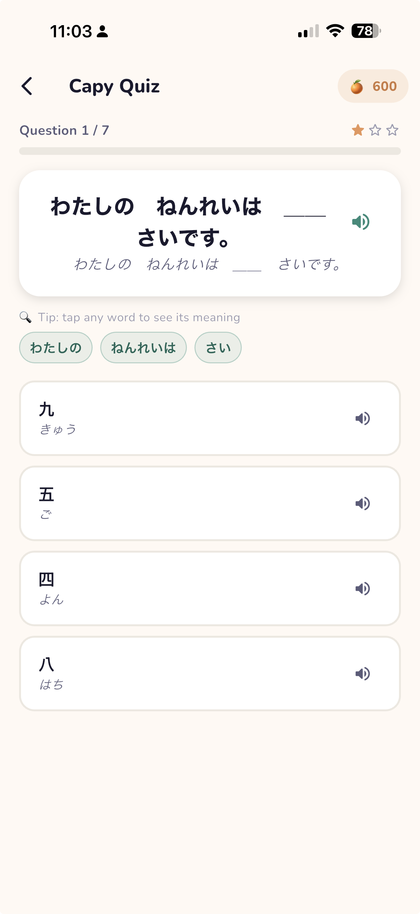
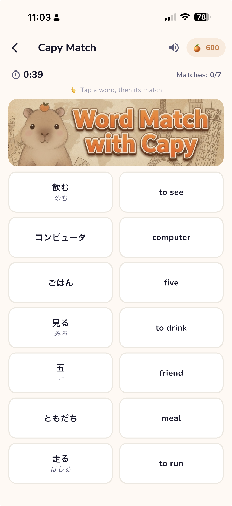

Everything Capy can do — from your very first word to a few little hidden tricks. Tap any step to jump in. 🌿
Choose what you're learning and the language you already know — add as many pairs as you like.
💡 Tip: tap the language pill at the top to switch between pairs anytime, or add a new one. You learn in a language you already know.
However you meet a word in real life, Capy can save it — and fill in the rest.
Type any word and Capy adds the meaning, examples, pronunciation, and variations.
Tap the mic and speak — in the language you're learning or the one you already know. Capy figures out the word.
Share a picture and Capy reads the word right off it (OCR).
Select text in Safari — or anywhere — and share it straight into Word Review.
Snap a screenshot of a page and add every word it finds in one go.
Pick the same language for both what you're learning and what you already know. Instead of translating, Capy gives you definitions, example sentences, and pronunciation — a full single-language dictionary for any of the 32 languages.
Tap a card to reveal the answer, hear it spoken, and rate how well you knew it — Capy brings tricky words back more often. Mark favorites, add your own tags, then filter or practice just one group.
Mini-games made from your own saved words — win oranges 🍊 along the way!
Guess the word from a sentence or its meaning, with pronunciation and readings.
Match words to their meanings and beat the clock across three levels.
Catch the falling words in Capy's cozy hot-spring before they splash in.
Hear a word, then catch its meaning as it falls — train your ears!


Themes, daily reminders, your own AI key, and tools to organize your word bank.